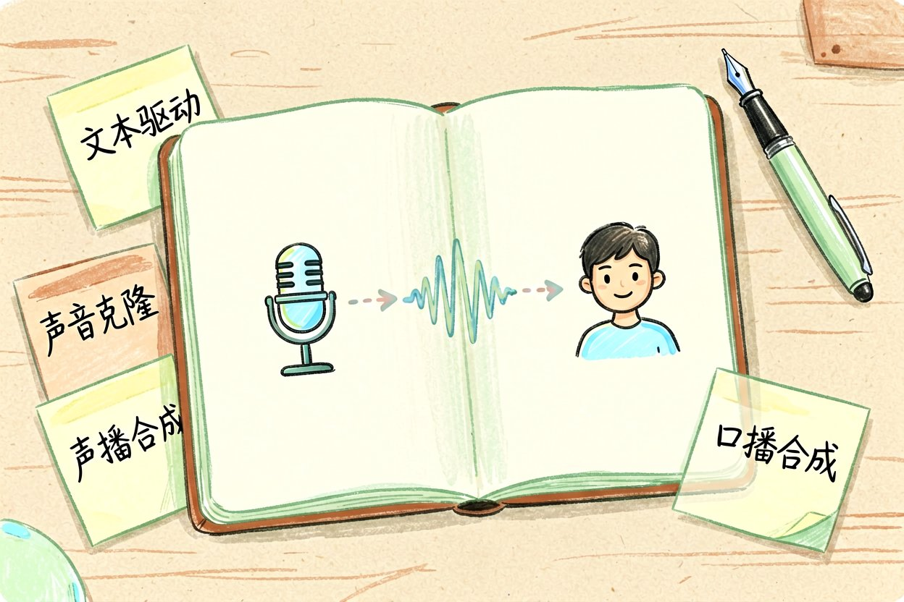
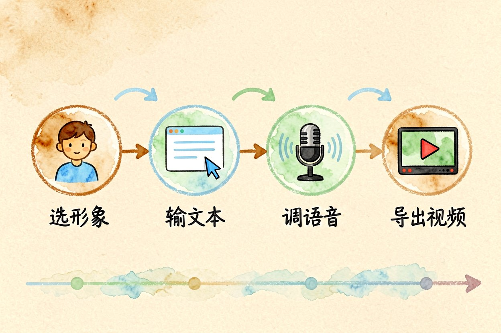
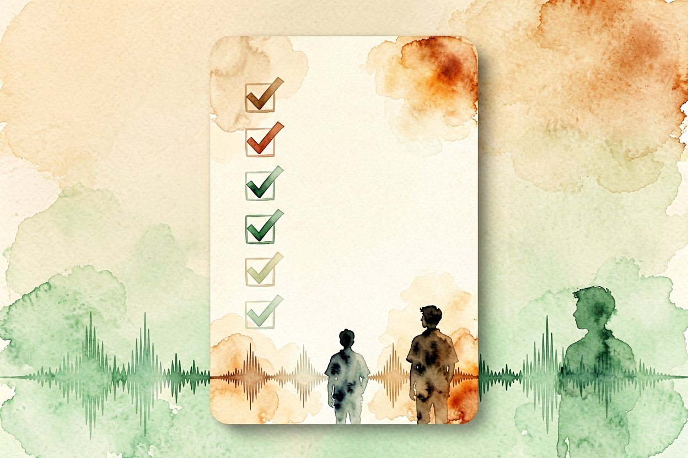

AI 数字人配音入门：输入文稿就能开口说话
不想出镜也能做口播视频？用 AI 数字人配音，输入文稿就能生成会说话的角色。
AI数字人配音的本质，是把一段文字变成带语气、能对口型的说话视频。你不用露脸，也不用录音棚，给稿子它就开口。下面说清怎么落地，以及哪些地方别指望模型替你兜底，省得成片出来才发现问题，返工最磨人。
AI数字人配音能做什么

它适合知识口播、产品介绍、课程旁白这类"读稿"场景。你写文稿，模型负责断句、停顿和口型同步。真人出镜更亲切，但数字人胜在快和可批量，一条稿改改就能出第二版。适合日更或矩阵号，真人则适合建立信任的头部内容。两者不是替代关系，是按频次和信任度分工，别非此即彼。
怎么做：先把文稿拆顺
一口气生成整篇，语气容易平。按句切分、每句单独合成，再拼回去，起伏更自然。下面这段是思路，分段合成也方便后期只换某句：
sentences = ["大家好", "今天聊数字人配音", "输入文稿就能生成"]
for s in sentences:
speak(s)短句分段合成，后期也好替换某一句，不用整条重来。长稿建议先标好重音和停顿，模型比盲读更像人，这是很多人忽略的第一步。语气起伏对了，观众才听得进去，否则再准也像念稿。
声音克隆的边界

克隆自己声音做内容没问题；克隆别人声音商用，要授权，否则有法律风险。平台对声纹也有审核，别绕过。把授权聊天记录留好，比事后扯皮强，这是很多新手容易漏的一步。企业用克隆音色做客服，还要在页面标明"由 AI 生成"，瞒着反而违规，透明度现在是硬要求。
真实感别全交给模型
嘴型偶尔对不齐、换气不自然，这些细节观众一眼能觉出"假"。关键镜头加真人补拍，比全用数字人更可信。数字人适合量大、标准化的口播，重信任的环节仍留给真人，分工最稳。口型差一两帧，观众未必说得出，但就是觉得别扭，这种别扭会拉低完播，数据上看得出来。
配音和真人怎么分工
日常更新、信息播报交给数字人，省下的真人出镜留给决策建议、情感连接这类高价值内容。把真人稀缺性用在刀刃上，账号整体产出反而更稳。观众对"人"的信任，是数字人短期补不上的，别为了省力把人设也虚拟化，那是捡芝麻丢西瓜。
新手起步建议
先用平台自带音色跑通一条视频，再考虑克隆。别一上来就追求以假乱真，AI数字人配音是提效工具，真实感的关键仍靠你的内容本身，技术只是放大器。出片频率比单条精致更重要，尤其做账号，每周稳定更两条比憋一个月出一条神作涨粉快。数字人帮你解决"没空出镜"的借口，剩下的就看你能不能坚持更。先跑通再迭代，很多人的第一个坑是永远在准备，把第一条当成练手，心态松了反倒出得快。

本文信息核对于 2026-08-31。AI 产品的价格、免费额度与功能变动频繁，实际以各工具官网当前说明为准。